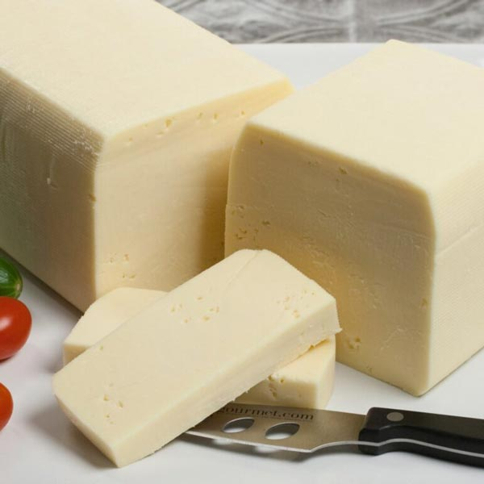

C h e e s e

Description
Butterkase is a wonderful cheese that is easy to make, full of flavor and has a wonderful buttery texture, hence the name.
With a short aging period, this cheese will be ready to enjoy within two months and is a great choice for home cheese makers.
Ingredients
- Milk
- C21 Buttermilk Culture
- C201 Thermophilic Culture
- Geotrichum Candidum
- Liquid Rennet
- Salt
- Chalcium Chloride
Equipment
- Good Thermometer
- Knife
- Spoon
- Butter Muslin
- Cheese Mold
- Draining Mat
- Weight
Steps
- Acidify & Heat Milk
- Coagulate with Rennet
- Cut Curds & Release Whey
- Cook the Curds
- Form the Cheese
- Salting
- Aging
Return to Homepage